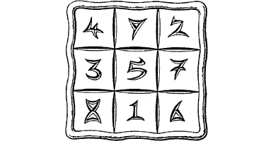

158
A narrow corridor connects the chamber to another, where there stands an imposing door made of sheeted copper, inlaid with a filigree of gold and silver. It is the only exit from this otherwise drab chamber.
A closer inspection of the door reveals that it is surrounded by an airtight seal. Furthermore, there is no keyhole, bolt, or handle. However, your keen eyesight is drawn to a pattern in the door’s centre panel which, thanks to past experience, you recognize to be a sophisticated combination lock.
The gold inlays form three rows of three numbers within a grid of silver lines:
{kind=link}

Below these numbers, in ancient Cenerese script, is carved the message:
‘Declare ye the true number to pass this way’
Study the grid of numbers. When you think you know the answer to the riddle, turn to the entry that bears the same number as your answer. 7
If you cannot solve this puzzle, turn to 132.
Footnotes
[7] The section corresponding to the correct answer will have a footnote confirming that it is indeed correct.